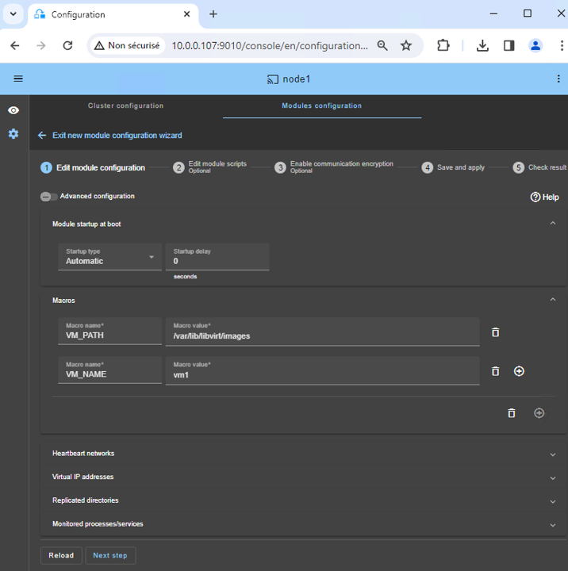
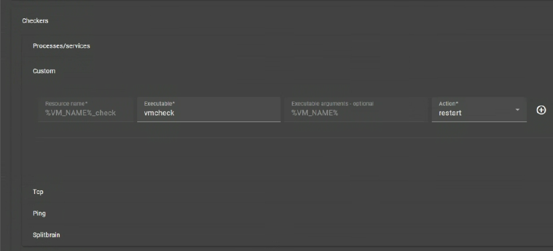
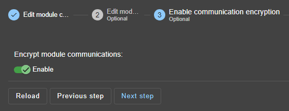
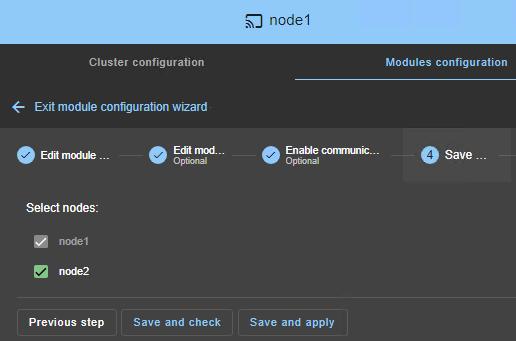
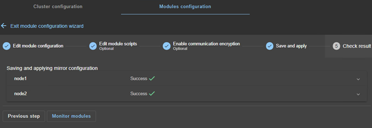
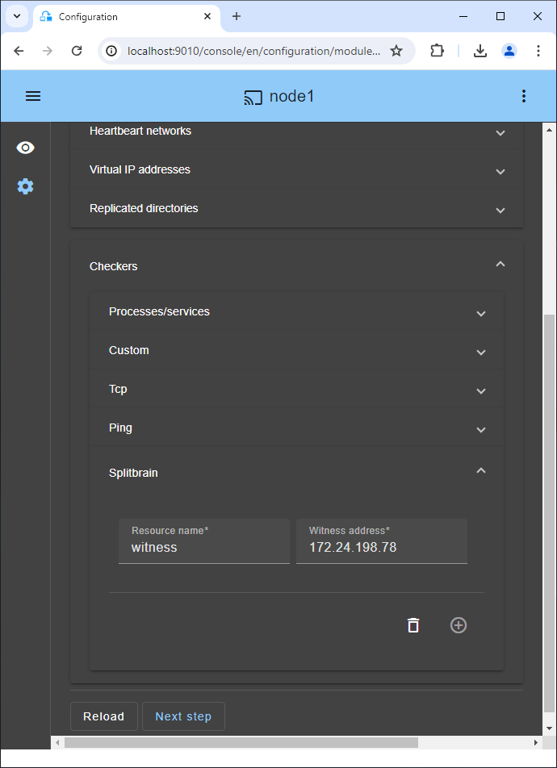

SafeKit による KVM 高可用性：フェイルオーバー用 kvm.safe モジュールをインストール
KVM の高可用性クイック インストール ガイド
このガイドでは、セットアップ方法について説明します。 ミラークラスタ のために KVM を使用して SafeKit共有ストレージを必要とせずに、自動フェイルオーバーと同期レプリケーションを保証します。
ヘルプが必要な場合は、次を使用できます SafeKit AI 🤖.
1. 概要
- アーキテクチャ: 2ノードシステム(プライマリ/セカンダリ)を採用します。
- データ保護: リアルタイム同期レプリケーションを実装します。 データ損失ゼロ (RPO=0)。
2. インストール
- ソフトウェア: SafeKit エンジンを両方のサーバーにインストールします。
- モジュール: 事前設定されたものをダウンロードする
kvm.safeアプリケーションモジュール。
3. 構成
- ウェブコンソール: KVM ファイルを含む特定のフォルダーを構成します。
- モニタリング: KVM アプリケーションの監視と保護を開始します。
SafeKit 高可用性の制限事項
| 制限 / 要件 | 理由と影響 | 推奨される代替案 |
|---|---|---|
| レプリケーションサイズ: 数 TB | 障害後の再同期時間 (ステップ 3) : • 1 Gb/s ネットワーク ≈ 3 時間 / TB • 10 Gb/s ネットワーク ≈ 1 時間 / TB (ディスクの書き込みパフォーマンスに依存) |
• 外部共有ストレージを使用する (より高価、より複雑)。 |
| ファイル数: < 1,000,000 ファイル | • 障害後の再同期時間のパフォーマンス (ステップ 3)。 • 両方のノード間で各ファイルを確認するための時間。 |
• レプリケートする多数のファイルを仮想ハードディスク / 仮想マシン内に配置する。 • この場合、仮想ハードディスク / 仮想マシンを表すファイルのみがレプリケートおよび再同期されます。 |
| フェイルオーバー容量: ≤ 32 VM | • 各 VM は独立したミラーモジュールで実行されます。 • 同じクラスターで実行できるミラーモジュールは最大 32 個です。 |
• 外部共有ストレージと別の VM クラスタリングソリューションを使用する (より高価、より複雑)。 |
| ネットワークアーキテクチャ: リモートサイト間の LAN/VLAN ネットワーク | • 同じサブネット内にある 2 つのノードでの仮想 IP アドレスの自動フェイルオーバー。 • 再同期のための良好な帯域幅 (ステップ 3)。 • 同期レプリケーションの低レイテンシ: 通常 < 5 ms RTT。これより高い値は、アプリケーションの書き込みレートに対して検証する必要があります。 |
• 2 つのノードが 2 つのサブネットにある場合は、仮想 IP アドレス用ロードバランサーを使用する (SafeKit でサポート、特にクラウド環境)。 • 高レイテンシネットワークには、非同期レプリケーションを備えたバックアップソリューションを使用する。 |
SafeKit / KVM ソリューションの概要
解決策の詳細はこちら：💡共有ストレージを使用しないシンプルなLinux KVM高可用性
Linux 上に SafeKit / KVM ソリューションをインストール (kvm.safe)
前提条件
- KVM が 2 台の Linux ノードにインストールされています。
- 1 つ以上の仮想マシン内にインストールされた重要なアプリケーション。
- KVM ホストあたり最大 32 台の仮想マシンをサポートします。
- 複製されるデータの合計は数テラバイトに制限されており、これを超えると再同期にかかる時間が大幅に長くなります。
- ノード間の相互接続は最低 1Gb/秒 (再同期を高速化するには 10Gb/秒を推奨)。
- IP フェイルオーバーには、両方のノードが同じ LAN または拡張 LAN (L2) 上にある必要があります。ルーティングされた L3 ネットワークはサポートされません（🛠️ クラウドロードバランサーを使用する場合を除く）。
Linux へのパッケージのインストール
- SafeKit の無料バージョンを 2 つの Linux ノードにインストールします。注: 無料トライアルには、SafeKit のすべての機能が含まれています。トライアル終了後は、パッケージをアンインストールせずに永久ライセンス キーをアクティブ化できます。
- safekit_xx.bin パッケージをダウンロードしたら、それを実行して rpm および safekitinstall スクリプトを抽出し、 safekitinstall スクリプト
- 答え はい ファイアウォール自動設定へ
- Webコンソールとデフォルトユーザーのパスワードを設定します。 admin. すべてのノードに同じパスワードを設定します。
Linux へのモジュールのインストール
- ダウンロード kvm.safe モジュール。
モジュールは無料です。これには、userconfig.xml ファイルと再起動スクリプトが含まれています。 - 置く kvm.safe 下 /opt/safekit/Application_Modules/generic/.
のステップバイステップ構成SafeKit/KVMソリューション
⚠️ KVM 構成には、という名前の仮想マシンが表示されます。 VM1 障害が発生した場合に再起動するアプリケーションが含まれています。
⚠️ 複製して再起動するすべての VM に対してこの構成を繰り返す必要があります。
1. 前提条件
VM1 仮想マシン イメージがファイル内にあります /var/lib/libvirt/images/vm1.qcow2。設定する前に SafeKitに仮想マシンを配置するには、次の構成を実行する必要があります。 vm1- レプリケートされる特定のディレクトリ SafeKit。
ノード 1 上:
-
vm1 を停止します:
virsh shutdown vm1 -
を作成します
vm1/ディレクトリ:mkdir -p /var/lib/libvirt/images/vm1/ -
vm1 イメージを新しい場所にコピーします。
cp -a /var/lib/libvirt/images/vm1.qcow2 /var/lib/libvirt/images/vm1/
元の vm1 イメージは、新しい場所でのテストが成功するとすぐに削除できます。
-
vm1 構成ファイルを編集します。
EDITOR=vi virsh edit vm1
そして行を変更します:
<source file='/var/lib/libvirt/images/vm1.qcow2'>
によって:
<source file='/var/lib/libvirt/images/vm1/vm1.qcow2'>
-
を設定します。 キャッシュオプションを「なし」に設定 クラッシュ時のデータ整合性のために、同じファイル内に次のように記述します。
<disk type='file' device='disk'> <driver name='qemu' type=’qcow2’ **cache='none'** /> -
vm1設定ファイルを閉じます。
-
無効にする vm1 自動起動:
virsh autostart vm1 --disable -
を作成します
vm1.xmlvm1 の設定ファイル:virsh dumpxml vm1 > vm1.xml
ノード 2:
-
をコピーします
vm1.xml注: ノード 1 で vm1 構成が変更されるたびに、新しい構成をノード 2 に再適用する必要があります。 -
vm1 を作成しますが、開始しません。
virsh define vm1.xml -
vm1 自動起動を無効にします。
virsh autostart vm1 --disable -
イメージの場所のディレクトリを作成します。
mkdir -p /var/lib/libvirt/images/vm1/
2. SafeKit コンソールを起動します
- に接続して、1 つのクラスター ノード上のブラウザーで Web コンソールを起動します。
http://localhost:9010. - 入力してください
adminインストール時に定義されたユーザー名とパスワードとして。
クラスター外部のワークステーション上のブラウザーでコンソールを実行することもできます。
⚠️ SafeKit の構成は、単一のブラウザから両方のノードで実行されます。
ℹ️ Web コンソールを保護するには、🛠️ を参照してください。 11. SafeKit Web サービスのセキュリティ保護 ユーザーズガイドに記載されています。

3. ノードアドレスを設定する
- ノード IP アドレスを入力し、
Tab key接続を確認し、ノード名を入力します。 node1 または node2 のいずれかが赤色の場合は、両方のノードへのブラウザの接続を確認し、両方のノードのファイアウォールで 🛠️ を確認してください。 トラブルシューティング. - 次に、 をクリックします
Save and applyをクリックして設定を保存します。 - チェックしてください
Success両方のノードで ✅ メッセージ。 - 構成の場合
Failure❌ が 1 つのノードで発生する場合は、そのノードの ▼ アコーディオンを開いてメッセージを確認します。 SafeKit AI 🤖 を支援として使用できることに注意してください。
ℹ️ 必要に応じて、新しいものを追加できます LAN and nodes (最初の ➕) 2 番目のハートビートと専用のレプリケーション ネットワークを作成します。
ℹ️ をクリックすると Advanced configuration、 cluster.xml ファイルが表示されます。このファイルはコンソールによって自動的に設定され、ノードにデプロイされます。

4. モジュールを選択します
- で
New moduleをクリックして、kvm.safeモジュール。
ℹ️ 上部の青いバナー内、 node1 はコンソール接続ノードを表します。このノードはリクエストを中継します node2 必要な場合。
ℹ️ コンソールは次のものを探します xxx.safe で Application_Modules/generic/ 接続ノード上のディレクトリ (node1) インストール中にそこにモジュールを配置した場合。

5. モジュールの構成
- を選択してください
Automatic起動時に遅延なくモジュールが開始されます。 - 通常は 1 つあります
Heartbeatレプリケーションが行われるネットワーク。ただし、必要に応じてプライベート ネットワークを定義できます (ステップ 3 で LAN を追加します)。 - 入れて
VM_PATH、レプリケートされたディレクトリのルート パス (/var/lib/libvirt/images). - 入力してください
VM_NAME、仮想マシンの名前 (vm1).
VM1 ファイルが次の場所にあると仮定します。 /var/lib/libvirt/image/vm1/ (参照 前提条件）。このディレクトリは、SafeKit によってリアルタイムでレプリケートされます。
ℹ️ 仮想を構成する必要はありません IP 住所。 VM1 セカンダリで再起動されます KVM その物理的な IP 住所とこれ IP アドレスは再ルーティングされます。

6. VMの異常を検出するカスタムチェッカー
カスタム チェッカーは、VM が実行されているかどうかをチェックします (「virsh domstate」コマンドを使用)。 VM が実行されていない場合、カスタム チェッカーは同じ KVM ノードまたは別のノードで VM を自動的に再起動します。
- をクリックしてください
Checkers / Custom(画像を参照)。 Resource nameSafeKit のリソース名を持つ仮想マシンを識別します。custom.VM_NAME_check.- と
restartでAction、VM は同じ KVM ノードで再起動されます。 24 時間以内に再起動が 3 回失敗すると、プライマリ ノードで SafeKit kvm モジュールが停止し、セカンダリ ノードで VM のフェールオーバーが発生します。 - 設定した場合
stopstartでAction、VM が実行されなくなるとすぐに、他の KVM ノードで直接フェールオーバーが行われます。
ℹ️ メンテナンスのために仮想マシンを停止する場合、カスタム チェッカーによって仮想マシンが自動的に再起動されます。それを回避するには、一時的に チェッカー 🖼️ を一時停止します。または、コンソールの設定行を削除して削除することもできます。

7. スクリプトの編集 (オプション)
- スクリプトを編集しないでください。
8. 通信の暗号化（オプション）
- ノード間の通信の暗号化を維持します。

9. 保存して適用する
Save and apply両方のノードの構成とスクリプト。

10. 構成が成功したことを確認する
- チェックしてください
Success両方のノードで ✅ メッセージが表示され、Monitor modules. - 構成の場合
Failure❌ が 1 つのノードで発生する場合は、そのノードの ▼ アコーディオンを開いてメッセージを確認します。 SafeKit AI 🤖 を支援として使用できることに注意してください。

11. 最新のデータを使用してノードを起動します
- ノード 1 に最新のレプリケートされたディレクトリがある場合、
vm1/、それを選択し、⋯Force start▶As primary.
ノード 2 が起動すると、すべてのデータがノード 1 からノード 2 にコピーされます。
⚠️ 選択を誤ると、両方のノードで古いデータが同期される危険があります。
⚠️ とも仮定します。 VM1 ノード 1 で停止しているため、SafeKit はレプリケーション メカニズムをインストールしてから開始します。 VM1 で start_prim スクリプト。
⚠️の使用 Start 以降の起動の場合: SafeKit は最新のサーバーを保持します。開始 As primary は、初回または例外的な操作中の特別な起動です。

12. ALONE (緑色) への遷移を待ちます。
- ノード 1 は ALONE (緑色) 状態になるはずです。
start_primスクリプトはノード 1 で実行されました。
⚠️ ALONE (緑) に達しない場合、または VM1 が開始されない場合は、次のコマンドを使用して理由を分析します。 モジュールログ 🖼️ ノード1の。
- 🔍をクリックしてください ログ のアイコン
node1モジュール ログを開いて、チェッカーがエラーを検出してモジュールを停止したなどのエラー メッセージを探します。 - をクリックしてください
start_primログ: スクリプトの出力メッセージが右側に表示され、VM1 が正しく開始されていないなどのエラーを検出できます。 - ログ メッセージの支援には、SafeKit AI 🤖 を使用してください。
⚠️ クラスターが存在する場合 WAIT (red) not uptodate, STOP (red) not uptodate 状態、WAIT ノードを停止し、 プライマリ 🖼️ として強制的に開始します.

13. ノード 2 を開始します
- ⋯
Startノード 2 とそのコンテキスト メニュー。 - SECOND (緑色) 状態になるまで待ちます。
ℹ️
- ノード 2 は、レプリケートされたディレクトリを再同期している間 (ノード 1 からノード 2 にコピー)、SECOND (オレンジ) 状態を維持します。
- 複製されたディレクトリ内で再同期するファイルのサイズとネットワーク帯域幅によっては、時間がかかる場合があります。
- コピーの進行状況を確認するには、 モジュールログ 🖼️ そして レプリケーションリソース 🖼️ ログ メッセージの支援には、SafeKit AI 🤖 を使用します。

14. クラスターが動作していることを確認します。
- クラスターが緑色/緑色であることを確認します。
VM1PRIM ノードでは実行されていますが、SECOND ノードでは実行されていません。
この状態では、ファイル内の変更のみがリアルタイムでレプリケートされます。

15. テスト
- コンテキスト メニューを下にスクロールして をクリックして、PRIM ノードを停止します。
Stop. - SECOND ノードにフェイルオーバーが存在し、ALONE (緑色) になることを確認します。
- KVM ツールで確認してください。
VM1ノード 2 で実行されています。
⚠️ もし ALONE (緑) に達していません node2 あるいは VM1 が開始されない場合は、原因を分析してください モジュールログ 🖼️ ノード2の。
- 🔍をクリックしてください ログ のアイコン
node2モジュール ログを開いて、チェッカーがエラーを検出してモジュールを停止したなどのエラー メッセージを探します。 - をクリックしてください
start_primログ: スクリプトの出力メッセージが右側に表示され、VM1 が正しく開始されていないなどのエラーを検出できます。 - ログ メッセージの支援には、SafeKit AI 🤖 を使用してください。
⚠️
- すべてに問題がない場合は、node1 で起動を開始します。これにより、複製されたディレクトリが node2 から再同期されます。
- 問題が発生した場合は、node2 を停止し、 プライマリ 🖼️ として強制的に起動します node1 の、停止時にローカルに正常なデータを使用して再起動されます。
ℹ️ 🕒 があることに注意してください。 タイムライン 🖼️ これは、クラスター内で何が起こっているかを理解するのに役立ちます。

16. 必要に応じて、スプリットブレイン チェッカーを構成します
- 参照 クラスター内でネットワークが分離された場合のさまざまなシナリオにはどのようなものがありますか? スプリットブレイン チェッカーを構成する必要があるかどうかを確認します。
- モジュール構成に移動し、をクリックします。
Checkers / Splitbrain(画像を参照) スプリットブレインパラメータを編集します。 Save and apply新しい構成を両方のノードに再デプロイします (保存して適用するには、モジュールを両方のノードで停止する必要があります)。
パラメータ :
Resource nameリソース名で監視者を識別します。splitbrain.witness。この値を変更して証人を識別できます。Witness addressノードが PRIM から ALONE に、または SECOND から ALONE に移行するときの ping の引数です。この値は、監視 (堅牢な要素、通常はルーター) の IP で変更します。- 注: 複数の IP を空白で区切って設定できます。 IP アドレスは 1 つのノードからはアクセス可能である必要がありますが、ネットワークが分離されている場合は他のノードからはアクセスできないことに注意してください。

17. スナップショットのレプリケーション
スナップショット XML ファイルが含まれるディレクトリは次のとおりです。
/var/lib/libvirt/qemu/snapshot/%VM_NAME%
どこで VM_NAME 仮想マシンの名前です (vm1)。
注: スナップショットが作成されていない場合は、スナップショットを作成してディレクトリを生成します (そうしないと、SafeKit 構成が失敗します)。
それを複製するには:
-
モジュール構成で、 をクリックします。
Advanced Configuration(画像を参照) 編集するにはuserconfig.xml. -
以下の行を
<rfs>userconfig.xml のセクション:<replicated dir="/var/lib/libvirt/qemu/snapshot/%VM_NAME%" mode="read_only"> </replicated> -
Save and apply変更された userconfig.xml ファイルを両方のノードに再デプロイするための新しい構成 (保存して適用するには、両方のノードでモジュールを停止する必要があります)。 -
でスナップショットを作成します。 PRIM ノードのいずれかを介して virt-manager またはコマンドライン:
virsh snapshot-create-as vm1 snapshot-name
注: コマンド ラインでスナップショットを作成する場合は、スナップショット ビューを virt-manager に更新する必要があります。
PRIM ノードで作成されたスナップショットは、フェイルオーバー後にノード 2 で動作しますが、ノード 2 にはリストされません。
-
ノード 2 にスナップショットをインポートするには、次のコマンドを実行する必要があります。
virsh snapshot-create --redefine vm1 /var/lib/libvirt/qemu/snapshot/vm1/snapshot-name -
vm1 のすべてのスナップショットをリストするコマンド ラインは次のとおりです。
virsh snapshot-list vm1
18. サポート
- サポートを受けるには、SafeKit を 2 つ受け取ります
Snapshots(2 つの .zip ファイル)、ノードごとに 1 つ。
ℹ️ 詳しいサポート情報はこちら.

VMレベルの高可用性ソリューションのデモンストレーション
SafeKit ビデオ: Hyper-V を使用した仮想マシン レベルのクラスタリング (5:15)
このビデオでは、SafeKit がどのように実装されているかをご覧ください。 Hyper-V の高可用性 SAN の複雑さはありません。構成を学ぶ 仮想マシンのレプリケーション 2 つのノード間で、重要な仮想化ワークロードのシームレスなフェイルオーバーを保証します。このデモでは Windows 上の Hyper-V を使用しますが、ソリューションは Linux 上の KVM と同様に機能します。
章
- 🎬 アーキテクチャの概要: 2 つの Hyper-V ノードと 2 つの仮想マシン (0:49)
- 🎬 クラスターとhyperv.safeモジュールの構成 (1:59)
- 🎬 ライブテスト: VMのレプリケーション、移行、クラッシュ時の自動フェイルオーバー (2:26)
段階的な実装
- 🛠️ Windows 上でミラーリングされた Hyper-V クラスターをセットアップするためのガイドをお読みください。
- 🛠️ Linux 上でミラーリングされた KVM クラスターをセットアップするためのガイドをお読みください。
🔍 SafeKit高可用性ナビゲーションハブ
** SafeKitの詳細：機能、技術ビデオ、ドキュメント、無料トライアル**
| リソースタイプ | 説明 | ダイレクトリンク |
|---|---|---|
| 主な特長 | シンプルでコスト効率の高い高可用性を実現するなら、 SafeKitを選ぶ理由とは？ | 高可用性を実現するなら、 SafeKitを選ぶ理由をご覧ください |
| ユースケース | SafeKit重要インフラストラクチャの高可用性をどのように確保するかをご覧ください | すべてのユースケースを見る（OEM ソフトウェア、エッジ サーバー、SCADA など） |
| デプロイメントモデル | オールインワン SANレス HA: シェアードナッシング ソフトウェアクラスタリング | 参照SafeKitオールインワン SANレス HA |
| HA戦略 | SafeKit : インフラストラクチャ (VM) とアプリケーションレベルの高可用性 | SafeKit HAと冗長性: VMとアプリケーションレベルを参照 |
| 技術仕様 | SafeKitクラスタリングの技術的制限事項 | SafeKit可用性の制限事項を参照 |
| ビデオ | SafeKit : 高可用性構成とフェイルオーバーのデモ | 参照SafeKitフェイルオーバーチュートリアル |
| アーキテクチャ | クラスターSafeKit動作原理 (リアルタイムレプリケーションとフェイルオーバー) Mirror |
クラスター: リアルタイムレプリケーションとフェイルオーバーを参照SafeKit Mirror |
| アーキテクチャ | クラスター | 動作原理 (ネットワーク負荷分散とフェイルオーバー) SafeKit Farm クラスター: ネットワーク負荷分散とフェイルオーバーを参照SafeKit Farm |
| 競争上の優位性 | 比較: SafeKitと従来の高可用性 (HA) クラスタ | を参照SafeKitと従来の HA クラスタの比較 |
| 技術リソース | SafeKit高可用性: ドキュメント、ダウンロード、トライアル | 参照SafeKit HA 無料トライアルと技術ドキュメント |
| 事前構成済みソリューション | SafeKitアプリケーションモジュールライブラリ: すぐに使用できる HA ソリューション | SafeKit高可用性アプリケーションモジュールを参照 |